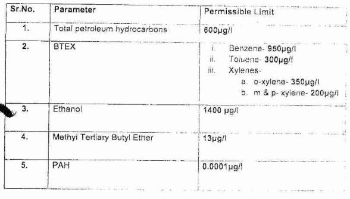
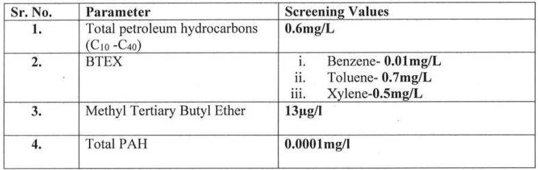
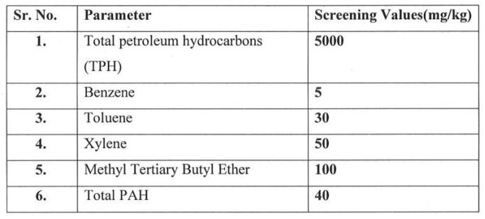

Item No.01
BEFORE THE NATIONAL GREEN TRIBUNAL
CENTRAL ZONE BENCH, BHOPAL
(Through Video Conferencing)
Original Application No.167/2025(CZ)
IN THE MATTER OF:
Animesh Choudhary S/o Shri Surendra
Singh, Aged about 35 Years, R/o Vayu
Sainik, Gas Agency, Rajuka, Tehsil Khetri,
District Jhunjhunu, Rajasthan (333 001)
Applicant(s)
Versus
1. The Union of India Through
Controller of Explosives, PESO
(Petroleum and Explosives Safety
Organisation), Hall No. 502 & 507 Respondent No. 01
level 5 Block B, old CGO Complex,
NH 4 Faridabad, Haryana 121001
5th, A Block, Seminary Hills, Nagpur,
Maharashtra (440001).
2. Deputy Chief Controller of
Explosives, Jaipur PESO (Petroleum
and Explosives Safety Organisation), Respondent No. 02
Amrapali Circle, Near Power House,
Vaishali Nagar (302021).
3. The Union of India through Secretary,
Ministry of Petroleum and Gas,
Kartavya Bhawan-03, Janpath, New Respondent No.03
Delhi (110001).
4. The State of Rajasthan Through The
Collector, Main Road, Indra Nagar,
Jhunjhunu, Rajasthan (333001). Respondent No.04
5. The Additional District Collector,
Jhunjhunu, Main Road, Indra Nagar,
Jhunjhunu, Rajasthan (333001). Respondent No.05
6. The Superintendent of Police, Jhunjhunu,
Indira Nagar, Jhunjhunu, Rajasthan, Respondent No.06
(333001).
7. The Sub-Divisional Magistrate,
Khetri, Jhunjhunu, Sub-Divisional
Magistrate Office, near Main Bus Respondent No.07
Stand,Khetri, Jhunjhunu, Rajasthan
(333503).
8. The Executive Engineer, PWD, Khetri,
Jhunjhunu, Khetri Nagar, Khetri,
Rajasthan (333503). Respondent No.08
9. The Executive Officer, Nagar-Palika,
Khetri, Purana Bass, Khetri, Rajasthan,
(333504) Respondent No.09
10. The Superintending Engineer, AVVNL,
Khetri, Jhunjhunu, Vidyut Bhawan,
Panchsheel Nagar, Makarwali Road, Respondent No.10
Ajmer, Rajasthan (305004).
11. Chairman, Central Pollution Control
Board, Parivesh Bhawan, East Arjun Respondent No.11
Nagar, Delhi (110032).
12. Chairman, Indian Oil Corporation Limited,
Indian Oil Bhavan, G-9, Ali Yavar Jung
Marg, Bandra (East), Mumbai - (400051). Respondent No.12
13. Ayush Shah S/o Raghunandan Shah
R/o Ward No. 8, Yogesh Bhawan, Respondent No.13
Khetri,Tehsil Khetri, Jhunjhunu,
Rajasthan (333503).
COUNSELS FOR APPLICANT(S):
Mr Prateek Katewa, Adv.
Mr. Aditya Raj, Adv.
Mr. Sarvesh Agarwal, Adv.
COUNSELS FOR RESPONDENT(S):
Mr. Rohit Sharma, Adv. for RSPCB
Mr. Om Shankar Singh, Adv. for R-1 & R-2
Ms. Shefali Jain, Adv. for R-9
Mr. Sandeep Singh, Adv. for CPCB
Mr. Shikha Singh, Adv. for R-11
Mr. Anas Hasan Khan, Adv. for R-3
Mr. Shivansh Soni, Adv. for R-12
Mr. Ishan Pradeep, Adv. for R-13
CORAM:
HON'BLE MR. JUSTICE SHEO KUMAR SINGH, JUDICIAL MEMBER
HON'BLE MR. SUDHIR KUMAR CHATURVEDI, EXPERT MEMBER
Date of completion of hearing and reserving of order : 04.08.2026
Date of uploading of order on website : 11.08.2026
JUDGMENT
1. The Applicant in the present Original Application has raised the issue of grant of NOC dated 24.09.2025 in favour of the Respondent No.13 Ayush Shah, by the Respondent No.04- District Collector, Jhunjhunu, for setting up of a Petrol Pump outlet at Khasra No.377/324 (old number 324), Town & Village - Gagadwas, Patwar Halka Rajota, Tehsil-Khetri, District-Jhunjhunu, which is in violation of the guidelines dated 07.01.2020 issued by the Central Pollution Control Board in consonance with the directions issued by this Tribunal because it is laid down therein that for setting up of a new petrol pump, new retail outlets shall not be located within radial distance of 50 meters (from fill point/dispensing units/vent pipe, whichever is nearest) from schools, hospitals (10 beds and above), and residential areas designated as sensitive as per local laws. In case of constraints in providing 50 meters distance, the retail outlet shall implement additional safety measures as prescribed by PESO Respondent No.1. In no case the radial distance between new retail outlet from school, hospitals (10 beds and above), and residential areas designated as per local laws, shall be less than 30 meters.
2. Notices were issued to the Respondents with direction to submit the reply. Reply has been filed.
3. We have heard learned counsel for the parties and perused the records.
4. The submission of the learned counsel for the Applicant are that there are certain guidelines with regards to the distance criteria that all such distances shall be measured radially. Moreover, the Petroleum and Explosives Safety Organization (PESO) Circular No. C- VIII(3)125/CIRCULAR/PETROLEUM dated 09.09.2024, paragraph 8, clearly mandates that "The District Magistrate shall mention in the No Objection Certificate (NOC) that no school, hospital (10 beds and above), residential area designated as per local laws in existing within 30 meters from the proposed retail outlet fill points, dispensers and vent pipes" yet, no such mention has been included in the letter issued by the Additional Collector. Contrary to the aforementioned regulations, actions violating these laws are reportedly underway.
5. The Indian Oil Corporation Ltd., through its Retail Sales Manager, has submitted an application to the District Collector, Jhunjhunu, for the issuance of a No Objection Certificate (NOC) to establish a petrol pump at Khasra No. 377/324, Village Gagadwas, Patwar Halka Rajota, Tehsil Khetri, District Jhunjhunu, Rajasthan. The proposed details were submitted to the Petroleum and Explosives Safety Organisation (PESO) with manipulated and concealed facts, resulting in the initial approval of the said map. The proposed application and inspection fail to mark within 100 meters, 50 meters, and 30 meters the locations of schools, gas godowns, hospitals, and residential areas as mandated by local laws. Instead, the map was fabricated and presented in a manner suited to the monetary benefits of the concerned people, which was provisionally approved. The individual proposing the petrol pump is reportedly a person of considerable influence and wealth and is trying to illicitly obtain all necessary NOCs through collusion with government agencies. Despite this, within 100 meters of the proposed petrol pump site, there exists a gas godown and an operational school. Furthermore, residential houses are situated within 30-50 meters as per local law's designated residential areas, including residential patta (land holdings) within the 30-meter radius. Additionally, two transformers and an electric line are installed in front of the proposed petrol pump site within the 100-meter radius, exacerbating risks and violations. A photograph of the transformers and electric line are attached herewith (ANNEXURE- 3). A site map based on satellite imagery of government land has been prepared to aid regulatory compliance and satellite assessment of the petrol pump location, which is attached herewith (ANNEXURE-4). The Jamabandi (revenue record) and site plan of the proposed petrol pump reveal a designated residential area (Khasra No. 286) falling within a 30-meter radius, which is adjacent to the proposed petrol pump constituting a breach of prescribed norms.
6. That subsequently, a letter dated 22/05/2025 was issued by the Tehsildar, Khetri, in response to the requisition made by the Additional District Collector for a report regarding the issuance of No Objection Certificate (NOC) for the proposed petrol pump. It is submitted that the said report has been prepared by the Tehsildar in collusion with interested parties and is in manifest contravention of the statutory rules and regulations governing the establishment of petrol pumps. The report neither references nor takes into consideration the binding guidelines and circulars issued by various central and state regulatory bodies, including the Central Pollution Control Board (CPCB), Petroleum and Explosives Safety Organization (PESO), and the National Green Tribunal (NGT). As such, the report submitted by the concerned Tehsildar is illegal, arbitrary, and devoid of legal sanctity, vitiating the entire approval process.
7. The Indian Oil Corporation, the Additional District Collector, and other authorities are completely disregarding the guidelines issued by the Government of India, the National Green Tribunal (NGT), and the Central Pollution Control Board (CPCB) in the following ways:
(i) The distance from petrol pump boundary to gas godam boundary is 77.50 meter.
(ii) Violation of Nagar Palika rules as per orders dated 21/09/2011, 30/10/2012 and 11/02/2015.
(iii) Violation of Gas Godown Regulations A petrol pump should not be located within a minimum 100-meter radius of a gas godown.
(iv) Violation of PESO (Explosive Department) Rules - No gas godown is permitted within 100-meter radius of a proposed petrol pump.
(v) Violation of Model Rajasthan Building Regulations As per gas godown norms, a petrol pump must not be established within a 100-meter radius of the proposed plot.
(vi) Violation of the Petroleum and Explosives Safety Organization (PESO) Circular No C.VIII(3)125/CIRCULAR/PETROLEUM dated 09/09/2024, which refers to CPCB guidelines dated 07/01/2020 regarding the setting up of new petrol pumps. According to these guidelines, new retail outlets shall not be located within a radial distance of 50 meters from designated residential area (as per local laws), schools and hospitals. Even with PESO approval, this distance shall not under any circumstances be reduced to less than 30 meters. However, Khasra No. 286 is a residential patta (residential area designated as per local laws) is adjacent to the proposed petrol pump and lies within 30 meters radius, thereby violating the mandatory guidelines of PESO, the Central Pollution Control Board (CPCB), and the National Green Tribunal (NGT) for the establishment of new petrol pumps.
8. It is further argued that the Applicant has highlighted the issues before the District Collector, Jhunjunu, along with other relevant Government officials but no action has been taken and NOC has been issued.
9. The Applicant has filed this application with the following prayer: - A. Grant an ad-interim stay restraining the Respondents, their agents or persons acting on their behalf, from continuing construction, operation, or any activity at the petrol pump situated at Khasra No. 377/324, Village Gagdvas, Tehsil Khetri, District Jhunjhunu, Rajasthan;
B. Direct the Respondents to refrain from issuing further No Objection Certificates (NOCs) or renewals for the petrol pump until legal compliance with all safety, environmental, and zoning norms is verified.
C. Order an urgent spot inspection by an independent expert or committee (such as CPCB, PESO, or a local environmental officer) to assess violations of safety distances, proximity to sensitive locations (schools, hospitals, houses, gas godowns, electric lines), and submit a detailed report to the Tribunal.
D. And such further order or orders as may be fit proper and necessary in the facts and circumstances of the case.
10. The District Magistrate after calling the report from the concerned Tehsildar, Police Department, regarding traffic density, commenced from the Municipal Corporation, Gram Panchayat, Local Area Development, commenced from the National Highway Authority and Public Department and commenced from the Fire Department, regarding accessibility of the site issued the NOC vide Order dated 24.09.2025 under the Petroleum Rules 2002. No Objection Certificate issued under Rule 144 of Petroleum Rules, 2002 was issued as follows:-
Government of Rajasthan Office of The District Collector & District Magistrate, Jhunjhunu Proforma No Objection Certificate (See rule 144 of the Petroleum Rules, 2002) LSDA File No.: F16(7)(10)Jud/25 Date: 24/09/2025 PESO Isda No.: P/RJ/JJN/P635414/21(N12187) Subject: No objection certificate under the Petroleum Rules, 2002.
With reference to the application No. IOC/RO/Rajota dated 27/06/2022 submitted by Ayush Shah and in pursuance of rule 144 of the Petroleum Rules, 2002, there is no objection for granting license under the Petroleum Rules, 2002 to Shri/Smt/ Ms. INDIAN OIL CORPORATION LIMITED, First Floor, LIC Investment Building, Phase-ll, Near Ambedkar Circle Bhavani Singh Road, Town/Village-Ward no 8 Khetri, District-JHUNJHUNU, State Rajasthan, Pincode-333503 for storage of petroleum products in their premises at Khasra No. 377/324 (OLD KH NO-324), Town/Village NEW GAGADWAS (OLD RAJOTA), Taluka/Tehsil-Khetri, District-JHUNJHUNU, State -Rajasthan as shown in the site plan duly endorsed and enclosed herewith.
1. The following particulars have been considered while issuing this ne-objection certificate, that- (a) comments from the Revenue Department on the issue, regarding the possession of the site by the applicant is lawful and there is an authorization from the land owner or leaseholder for developing premises under these rules for storage of petroleum products 2. (b) comments from the Police Department regarding traffic density and impact on traffic.
(c) comments from the concerned Municipal Corporation or Gram Panchayat or local area development authority as applicable, regarding the conformity of proposal to the local area development planning including schools, hospitals and mitigating measure, if any, is provided.
(d) comments from the National Highways Authority of India or Public Works Department or any other authority concerned regarding road safety, road alignment and road access conformity:
(e) comments from the Fire Department regarding accessibility of the sille to the fire tenders in case of emergency and preparedness of fire services for combating the emergencies.
11. Learned counsel for the Respondent No.13 has argued that the Retail Sales Manager of the Indian Oil Corporation Ltd. had applied to the District Collector, Jhunjhunu for issuance of No-Objection Certificate for the establishment of a petrol pump at Khasra 377/324, Village Gagadwas, Patwar Halka Rajota, Tehsil Khetri, Jhunjhnu, Rajasthan.
Whereafter, a letter dated 09.04.2025 was issued by Additional District Collector, Jhunjhunu inviting objections to the grant of NOC to the proposed petrol pump. seeking approval/Anumodan of relevant questions pertaining to grant of No-objection certificate.
12. Thereafter, Applicant had issued a legal notice dated 13.06.2025, through Advocate Shri Dinesh Hisariya, and addressed to District Magistrate and Collector, Jhunjhunu, SDM, Khetri and others, had filed his objections to the provision of NOC to Respondent No. 14 for the operation of Petrol Pump, wherein the issues, pertaining to siting of proposed pump, alleged in the present application have already been raised, which are as follows: - That the proposed petrol pump is allegedly located at a distance of 77.50 metres which is in violation of the terms of the PESO (Explosive Department) Rules, Violation of Gas Godown Regulations, and Model Building Regulations. The proposed Petrol Pump is allegedly located within 30 metres of radial distance from a School and Residential Area. An electricity line and two transformers are located at close distance from the proposed site.
13. In pursuance of these objections raised in the aforementioned legal notice, a team was duly constituted under the direction of the Revenue Inspector to specifically enquire, verify and assess the objections raised by the Applicant. After due enquiry, it came out with the following conclusions:
The radial distance between the Gas Godam located in Khasra No. 292 in gram Gagadwas, Khetri, Jhunjhunu is over 100 metres. The senior secondary school building located in Khasra No. 292 is located at a radial distance of about 64 metres.
There is no residence within the radial distance of 30 metres from the proposed filling point and there is no high-tension line or telephone line passing over the site proposed for the filling station. An electricity line is located at a distance of 24 metres from the filling point, on the roadside. There is no hospital in the vicinity or the area of the proposed site.
A letter dated 17.07.25 was sent by Tehsildar to the Sub-Divisional Magistrate, Khetri, Jhunjhunu informing him of the aforementioned enquiry findings.
14. These facts have actively been concealed by the Applicant in order to lend credence to the present application, which would otherwise be untenable in view of the fact that the proposed filling station is compliant with PESO regulations, petroleum rules, local laws, guidelines as mentioned in the order dated 22.07.2019 of the Principal Bench of this Hon'ble Tribunal.
15. All the formalities, checks and compliances have been adhered to for the grant of No-Objection Certificate by the District Collector. Hon'ble Supreme Court of India has opined that the PESO, MoPNG, Central Pollution Control Board, and other related regulatory bodies take account of impact of petrol pumps on environment and on public health and safety while formulating regulations. Therefore, compliance with these regulations ensures that the act of establishing a petrol pump is environmentally sustainable.
16. The grounds raised in paragraphs A to C (Grounds) pertaining to the dispensing unit at the proposed Petroleum filling station being located at a distance of lesser than 30 metres, or for that matter, even 50 metres from a School, located at Khasra no. 292, is false. The local inspection conducted by Patwari Halka Rajota, Khetri, Sikar, in response to the objection raised by the Applicant, are evident of the fact that the Senior Secondary School is located at a radial distance of 64 metres, which is permissible under the Circular dated 01.07.2020 released by the Central Pollution Control Board.
17. It is further argued that the Order dated 22.07.2019 passed by the principal bench of this Hon'ble tribunal.
"H. Siting criteria of Retail Outlets: New retail Outlets shall not be located within a radial distance of 50 meters (from fill point/ dispensing units/ underground storage tanks/ vent pipe whichever is nearest) from schools and hospitals (10 beds and above). In case of constraints in providing 50 meters distance, the retail outlet shall implement additional safety measures as prescribed by PESO. In no case the distance between new retail outlet and sensitive areas shall be less than 30 meters. No high-tension line shall pass over the retail outlet.".
18. It is further argued that No-Objection Certificate was issued by the Office of the Collector only after all relevant factors, and issues raised by the Applicant, were duly enquired into, on 24.09.2025. Thereafter, the pump was allowed to be commissioned on 30.09.2025 and operate on 30.10.2025.
19. We have also examined the report of the Tehsildar in which all the points which has been raised or discussed and a positive report has been submitted to the Sub-division Magistrate which was later on forwarded to the District Collector for a consideration of issue of the NOC.
20. Learned counsel has further took reliance in the Order dated 22.07.2019 passed in OA No.31/2019(PB) by which a Seven Member Committee discussed the issues and finalized the guidelines on the following subjects:
"A. Containment and treatment of spillages from fuel filling operations at petrol pumps.
1. Petrol pumps located in areas with high groundwater table shall have secondary containment by way of double walled tanks or concrete protection walls so as to minimize groundwater and soil contamination. Ground water level of less than 4m shall be considered for such provision, to be verified from online data being reported by State/ Central Ground Water Board/ Authority. In such case, measures taken by Oil Marketing Company shall be placed in public domain and in case of contradictory view, view of State/ Central Ground Water Board/ Authority will prevail.
2. All new retail outlets shall have underground tanks and its ancillary components such as pipes, flexible connectors, pumps, fittings etc. protected from leaks due to corrosion by adopting materials conforming to IS standards with required protective coating as applicable.
3. Any major spillage of Petrol, Diesel, Lube Oil (more than 1 barrel-165 litres) occurs at fueling station, concerned OMC shall report to State Pollution Control Board, PESO and District Administration under intimation to CPCB within 24 hours of occurrence.
Operation of such Retail Outlet shall be stopped immediately.
OMCs will be held liable for Environmental Compensation (imposed by SPCBs/PCCs) and assessment of environmental damage (depending on extent of contamination in soil and groundwater) and site remediation. Consultant/ Expert agency appointed by OMCs for damage assessment and site remediation shall have minimum national/ international experience of 07 years in this field. Various approved methods shall be considered for cleaning underground contaminants.
Operation of retail outlet shall not be resumed till corrective measures to contain and stop spillages are implemented to the satisfaction of PESO and concerned SPCB.
4. All DUs shall have Auto Cut off Nozzles which shuts dispensation of fuel if its level in customer fuel tank reaches full capacity.
5. Breakaways to be installed for all the hoses of dispensing units to reduce spillage in the event of customer vehicles moves away with nozzle still in the fueling position.
6. Two pane swivels shall be installed for all the dispensing units for better positioning of nozzle while refueling so that it does not fall off accidently.
7. In pressurized dispensation, all dispensing units shall be installed with shear valves to cut the fuel flow from pipe line immediately upon accidental knocking of dispensing units from its position.
8. In pressurized system all Submersible Turbine Pumps (STPs) are to installed with mechanical leak detectors and in the event of pipeline leaks STPs shall stop pumping fuel from underground tanks.
9. Emergency stop button switch shall be provided on the Multi-Product Dispenser (MPD) to stop the dispensation in case of emergency.
10. Automation system shall be installed at all new retail outlets to alert in case of tank leak by way of auto gauging system.
11. All Retail Outlets shall provide overfill alarm through automation.
12. Measures for spill containment in fill point chambers and forecourt area shall be implemented as prescribed by PESO.
B. Check on leakages (Leakage Detection System) from underground storage tanks so as to prevent groundwater and soil contamination 1. All new retail outlets will have automation system installed which will provide reports on volume balance after every day operation and records shall be maintained.
2. Manual gauging shall be done once in a month and compare the same with Automatic Tank Gauging for accuracy.
3. Daily MS and HSD loss shall not exceed MoPNG prescribed limits. In case of leakage beyond such limits, matter shall be got analyzed by OMCs and further action shall be taken for ascertaining the reasons of losses. In case of leakage resulting in soil / groundwater contamination:
a. Concerned OMC shall report to State Pollution Control Board, PESO and District Administration under intimation to CPCB within 24 hours of occurrence. Operation of such Retail Outlet shall be stopped immediately.
b. Fuel shall be removed immediately from underground storage tank to prevent further release to environment. Measures to prevent explosion due to vapors released due to leakage as recommended by PESO shall be implemented immediately.
c. OMCs will be held liable for Environmental Compensation (imposed by SPCBs/PCCs) and assessment of environmental damage (depending on extent of contamination in soil and groundwater) and site remediation.
Consultant/ Expert agency appointed by OMCs for damage assessment and site remediation shall have minimum national/ international experience of 07 years in this field. Various approved methods shall be considered for cleaning underground contaminants.
d. Operation of retail outlet shall not be resumed till corrective measures to contain and stop leakages are implemented to the satisfaction of PESO and concerned SPCB.
4. All underground tanks and pipelines shall be subjected to test for leaks every 5 years.
C. Policy towards Treatment and disposal of sludge removed from underground tanks during cleaning:
Sludge shall be collected, stored and disposed as per Rule 8 of Hazardous Waste (Management and Transboundary) Rules, 2016 and amendments thereof and records shall be maintained.
D. Installation, Operation and maintenance of Vapour Recovery System 1. All new retail outlets set up with sale potential of 300KL MS per month and setting up in cities with population more than 1 lakh will be provided with VRS. VRS should be functional by the time of sale of MS touch 300 KL per day.
In case of failure of installation of VRS, Environment Compensation will be levied equivalent to the cost of VRS and this will further increase proportionate to the period of non-compliance.
2. Any new retail outlet set up in cities having population more than 10 lakh and having sale potential of 100 KL MS per month will be provided with VRS. VRS should be functional by the time of sale of MS touch 100 KL per day.
In case of failure of installation of VRS, Environment Compensation will be levied equivalent to the cost of VRS and this will further increase proportionate to the period of non-compliance.
3. In case of Stage II YRS, dispensers shall be provided with flexible cover flap or other alternate system for proper covering of filling tank and therefore proper recovery of vapors.
4. OMCs are responsible for maintaining installed YRS systems. They have to maintain periodic inspections for AIL regulator as prescribed by Legal Metrology. Proper record shall be maintained.
5. Working of dispenser shall be interlinked with VRS functioning. Online system shall be developed within 06 months to monitor status of operation of VRS. In case of non-operation of VRS, the same shall be automatically reported to concerned OMC. YRS shall be brought into operation immediately within 24 hrs. and in any case within 72 hrs. failing which sale of MS shall be stopped from the fueling station. Proper records of operation of YRS shall be maintained.
6. Work zone monitoring for Total VOC and Benzene shall be conducted by OMCs for petrol pumps selling more than 300 KL/month and more than 10 lakh population (in first phase) by E(P)Act, 1986 approved labs once in a year to check compliance with OHSAS norms and report shall be submitted to SPCB. In addition, pilot study shall be conducted by OMCs through expert institutions for online monitoring of voes.
E. Ground water and soil quality monitoring within petrol pump selling more than 300 KL/ month and more than 10 lakh population shall be conducted by OM Cs once in two years through E(P)Act, 1986 approved labs for the following parameters from the nearest source and report submitted to SPCB:
I. Total petroleum hydrocarbons П. ВТЕХ III. Ethanol IV. Methyl Tertiary Butyl Ether V. PAH Enforcement agencies including SPCB can collect samples in and around petrol pump to check contamination.
F. Measures for protection of Worker's Health 1. All workers engaged at retail outlets are being covered under ESL OMC dealers shall implement the personal protective equipment (PPE) as per labor laws.
2. IEC (Information Education Communication) activities should be organized by OMC dealers for workers at regular intervals in order to sensitize them about harmful impacts of VOC emissions.
G. Audit of all protection measures and monitoring system implemented at petrol pumps:
PESO shall conduct audit of tanks and fuel equipments including pipes, overfill protection equipments and alarm system on annual basis and maintain records.
H. Siting criteria of Retail Outlets: New retail Outlets shall not be located within a radial distance of 50 meters (from fill point/ dispensing units/ underground storage tanks/ vent pipe whichever is nearest) from schools and hospitals (10 beds and above). In case of constraints in providing 50 meters distance, the retail outlet shall implement additional safety measures as prescribed by PESO. In no case the distance between new retail outlet and sensitive areas shall be less than 30 meters. No high-tension line shall pass over the retail outlet.
2. Feasibility study of new petrol pumps: MoPNG in the meeting convened by CPCB on February 08, 2019 in compliance of order dated 18.1.2019 OA No. 86/2019:
Gyanprakhash @ Pappu Singh us Uol informed that the any new outlet proposed to be set up by oil marketing company is after conducting feasibility study.
As regard to preventive measures for minimizing pollution, all new petrol pumps shall have VRS as per CPCB plan, and, shall follow guidelines for setting up of petrol pumps."
21. It was further directed that the CPCB have to finalize in consultation with the concerned departments. The Executive Officer Nagar Palika Mandal Khetri, Jhunjhunu has also reported in favour of the issues of the NOC. The office of the Superintendent of Police reported the matter in favour of the issue of the NOC.
22. Submission of the learned counsel for the Respondent No.12 Indian Oil Corporation are that the Applicant had earlier instituted a Writ Petition (PIL) before the Hon'ble Rajasthan High Court (Jaipur Bench) on the very same cause of action, titled Animesh Choudhary vs. Union of India & Ors. (D.B. Civil Writ Petition No. 15694/2025). In the said petition, the Applicant had. inter alia, sought issuance of directions for quashing and setting aside all No Objection Certificates (NOCs) and approvals granted in favour of the proposed petrol pump situated at Khasra No. 377/324, Village Gagdvas, Tehsil Khetri, District Jhunjhunu, Rajasthan, alleging non-compliance with mandatory statutory guidelines. safety norms, and environmental regulations.
23. Vide detailed Order dated 09.02.2026, the Hon'ble High Court was pleased to dismiss the said petition, categorically recording that the subject petrol pump outlet had already been established and that a report had been prepared by the Respondents confirming that no residential house exists within a distance of 30 meters from the outlet. The Hon'ble Court further observed that the petition was "not in the nature of a public interest litigation but a personal interest litigation," particularly in view of the fact that the Applicant's father/relatives own a rival petrol pump in the vicinity.
24. It is further submitted that the present Original Application is a gross abuse of the process of this Hon'ble Tribunal. The Applicant. Shri Animesh Choudhary, has invoked the jurisdiction of this Hon'ble Tribunal under the ostensible plea of environmental protection, whereas his true intent is rooted in business rivalry. The Applicant admittedly resides at and operates "Vayu Sainik Gas Agency" at Rajota, Tehsil Khetri, and the proposed Retail Outlet is situated in close proximity to his said establishment. The filing of the present proceedings is a calculated attempt to obstruct the establishment of a competing fuel/energy outlet in order to safeguard his own commercial interests. It is a settled principle of law that Public Interest Litigation cannot be permitted to be misused as a tool to settle personal scores or to advance business competition.
25. Evidently, the Applicant has not only approached this Hon'ble Tribunal with unclean hands, but is clearly forum shopping to somehow stop the functioning the subject petrol pump. Notably, while the Applicant alleges violation of the 100-meter distance norm from a gas godown, the Tehsildar's Report dated 22.05.2025 clearly records that the gas godown is situated at a distance of 118 meters from the proposed site. The Applicant has deliberately suppressed this material finding of fact in his pleadings to mislead this Tribunal.
26. The Answering Respondent (IOCL) is a Public Sector Undertaking and strictly adheres to all safety and environmental norms. The Retail Outlet in question (Khasra No. 377/324, Village Gagadwas) has been established only after obtaining valid No Objection Certificates (NOCs) from all competent authorities, including:
• District Collector, Jhunjhunu: Final NOC granted on 24.09.2025.
• PESO (Petroleum & Explosives Safety Organization):
Approval granted after verifying safety distances.
• PWD & Local Administration: Approvals granted regarding land conversion and road access.
27. It is further submitted that the site complies with the siting criteria.
The CPCB Guidelines dated 07.01.2020 regarding the 50-meter/30- meter distance apply to "residential areas designated as per local laws." The mere existence of a structure does not automatically classify an area as a "designated residential area" under the Master Plan. The Competent Authority (District Magistrate) has examined the site and found it compliant. That the allegation regarding electrical lines is factually incorrect. The Tehsildar's Report dated 22.05.2025 explicitly states: "No high-tension electrical line passes over the proposed land".
28. The land conversion and PESO license for the gas godown (Khasra
292) are matters of record. However, the existence of a gas godown does not automatically bar the establishment of a petrol pump if the statutory safety distance is maintained. As proven by the revenue records, the distance is 118 meters, which is well beyond the 100- meter safety corridor.
29. The Applicant claims violations of the PESO Circular dated 09.09.2024 but fails to provide proof of the actual distance being less than 30 meters from a designated residential area. The revenue authorities have verified the site coordinates and distances before issuing the NOC. The allegation that the NOC lacks specific mentions is a procedural argument that does not negate the fact that safety distances are physically met on the ground.
30. The site plan accurately reflects the actual physical status and topography of the - land and was duly examined by the competent authorities prior to granting approval. It is submitted that the competent authority, after due verification and inspection, has categorically found the site to be suitable and compliant with all prescribed norms. Furthermore, the Applicant's own document, namely Annexure A/6 (Tehsildar's Report). clearly records that the Gas Godown is situated at a distance of 118 meters from the proposed retail outlet site. This admitted factual position directly contradicts the Applicant's assertion in the Petition that the distance is within 100 meters, thereby exposing the falsity and inconsistency in the Applicant's pleadings.
31. The measurement carried out and certified by the Revenue Department through the Tehsildar constitutes the official and authoritative record, which clearly establishes compliance with the prescribed distance norms. The Applicant's contrary assertion is unsupported by any credible material and is liable to be rejected outright. Point (vi) is equally denied, as the establishment of the retail outlet does not violate any circulars or guidelines issued by PESO or CPCB. All requisite safety buffers and statutory requirements have been duly maintained and verified by the competent authorities prior to grant of approval.
32. It is important to mention that the Hon'ble Rajasthan High Court in its Order dated 09.02.2026 has already taken cognizance of the factual report submitted by the Respondents. wherein it - was categorically stated that "no residential houses are situated within a distance of 30 meters from the subject outlet". Furthermore, the Tehsildar's Report dated 22.05.2025 confirms that no high-tension electrical lines pass over the proposed land. Therefore, the allegations that Respondents failed to perform their statutory duties in verifying these distances are denied.
33. The Tehsildar, Khetri, after physical verification, has recorded the distance between the proposed site and the gas godown as 118 meters. This distance is well within the safety parameters prescribed under the relevant Gas Cylinder Rules and PESO guidelines.
Consequently, the allegations of fire hazards and safety violations (Ground D) are without merit as the statutory safety buffer has been duly maintained.
34. It further submitted that the Answering Respondent (IOCL) is a responsible Public Sector Undertaking that strictly adheres to the environmental safeguards mandated by the CPCB. The Retail Outlet is equipped with Vapor Recovery Systems (VRS) and modern underground storage tanks designed to prevent leakage and emissions. It is further submitted that the requirement of a full Environmental Impact Assessment (EIA) is not applicable to individual retail outlets of this nature, provided they possess valid Consents to Establish/Operate from the State Pollution Control Board/Competent Authorities, which Answering Respondent has duly obtained.
35. The District Collector, Jhunjhunu, and PESO have exercised their jurisdiction in accordance with law and issued the No Objection Certificate (NOC) on 24.09.2025 only after satisfying themselves regarding the site's suitability.
36. The Applicant has filed a writ petition before Hon'ble the High Court of Judicature for Rajasthan Bench at Jaipur vide DB Civil Writ Petition No.15694/2025 namely Animesh Choudhary Vs. Union of India & Ors. in which Indian Oil Corporation and Ayush Shah with the State and the District Magistrate were a party and matter in issue as raised in the present application was raised before the Hon'ble High Court, and after giving opportunity of hearing, disposed the application on merit as follows: -
1. This writ petition has been filed by the petitioner with the following prayer: -
"In light of the above facts and circumstances, it is most humbly and respectfully prayed that this Hon'ble Court may kindly be pleased to:
a. The actions of the Respondents may kindly be declared bad in the eyes of law and action may kindly be taken against the responsible officers; and, b. Issue a writ, order, or direction quashing and setting aside all No Objection Certificates (NOCs) and approvals granted in favour of the proposed petrol pump at Khasra No. 377/324, village Gagdvas, Tehsil Khetri, District Jhunjhunu, Rajasthan, for failure to comply with mandatory statutory guidelines, safety norms, and environmental regulations; and, c. Direct a thorough investigation and inquiry into the collusion and nexus between authorities and the Indian Oil Corporation Ltd. Officials in obtaining illegal approvals and NOCs, for initiating appropriate penal and disciplinary proceedings; and, d. Direct compliance with the guidelines issued by the National Green Tribunal, Central Pollution Control Board, and Petroleum and Explosives Safety Organisation in all material respects before any approvals or permissions relating establishment of petrol pumps; and, to the e. Pass any other order(s) as deemed fit in the facts and circumstances of the case to secure justice and public safety."
2. Learned counsel for the petitioner submits that the Respondents have sanctioned the petrol pump in violation of the norms fixed by the State Government as well as the Petroleum. Corporation. Counsel further submitted that the subject petrol pump is situated in close proximity to a residential area, which is in violation of the guidelines issued by the Urban Development Authority and the Housing Board, Department of the State of Rajasthan.
3. Per contra, learned counsel appearing on behalf of the Respondents opposed the submissions made by learned counsel for the petitioner and submitted that the petitioner has also challenged the allotment of the petrol pump before the National Green Tribunal, Central Zone Bench, Bhopal, by filing Original Application No. 167/2025 (CZ), wherein the following prayers have been made:-
"For the reasons stated above, it is humbly prayed that this Hon'ble Tribunal may be pleased to:
A. The actions of the Respondents may kindly be decided bad in the eyes of law and action may kindly be taken against the responsible officers; and, B. Issue direction quashing and setting aside all No Objection Certificates (NOCs) and approvals granted in favour of the proposed petrol pump at Khasra No.377/324, village Gagdvas, Tehsil Khetri, District Jhunjhunu, Rajasthan, for failure to comply with mandatory statutory guidelines, safety norms, and environment regulations; and, C. Direct a thorough investigation and inquiry into the collusion and nexus between authorities and the Indian Oil Corporation Ltd. officials in obtaining illegal approvals and NOCs, for initiating appropriate penal and disciplinary proceedings; and, D. Direct compliance with the guidelines issued by the National Green Tribunal, Central Pollution Control Board, and Petroleum and Explosives Safety Organisation in all material respects before any approvals or permissions relating to the establishment of petrol pumps; and, E. And pass such further order or orders as may be fit proper and necessary in the facts and circumstances of the case and thus render justice."
4. Learned counsel for the Respondents further submitted that the petrol pump belonging to the petitioner's father/relatives is situated approximately 2.5 kms away from the subject outlet, therefore, the present petition is not a public interest litigation but a litigation filed for personal interest. On these grounds, counsel for the Respondents prayed for dismissal of the writ petition filed on behalf of the petitioner.
5. We have heard learned counsels for the parties and perused the material available on record.
6. This writ petition filed by the petitioner deserves to be dismissed for the reasons: firstly, the petitioner has already filed an Original Application before the National Green Tribunal, Bhopal, on the same cause of action; secondly, the subject outlet has already been established and the Respondents have prepared a report stating that no residential houses are situated within a distance of 30 meters from the subject outlet; and lastly, since the petrol pump of the petitioner's father/relatives is situated in a nearby area at a distance of approximately 2.5 kms from the subject petrol pump, therefore, in our considered view, the present petition is not in the nature of public interest litigation but is a personal interest litigation.
7. In view of the above, the present writ petition stands dismissed.
8. All the pending application(s), stands disposed of.
37. Submission of the learned counsel for the Applicant are that the Hon'ble the High Court has not discussed on merits for the reasons that the matter was pending before this Tribunal.
38. Submission of the learned counsel for the Respondents are that the matter directly and substantially in issue in the present application was directly and substantially in issue before the Hon'ble High Court and all the issues which has been raised here has been raised and narrated by the Hon'ble High Court and it was disposed of on merit and no relief was granted by the Hon'ble High Court in favour of the Applicant.
39. The prayer which was raised and rejected cannot be again reagitated before this Tribunal. The grounds of the Respondents are as follows:
i. The subject outlet has already been established and the Respondents have prepared a report stating that no residential houses are situated within a distance of 30 meters from the subject outlet; and it was considered by the Hon'ble High Court matter was raised before the High Court and it was heard and decided thus it is barred by principles of res-judicata.
ii. Since the petrol pump of the petitioner's father/relatives is situated in a nearby area at a distance of approximately 2.5 kms from the subject petrol pump, therefore, in the view of the Hon'ble High Court, the present petition was not found to be in the nature of the Public Interest Litigation but in a Private Interest Litigation and the relief sought was not given to the Applicant and the matter was disposed of and the prayer was turned down.
On the basis of the above order the learned counsel for the Respondent and the State and Indian Oil Corporation submitted that the matter cannot be agitated again and again before the different Forums on the basis of "Forum Choice".
40. The submission of the learned counsel for the Respondent N.04, 05, 06 & 07 are that prior to the issuance of the NOC dated 24.09.2025, the matter was duly examined at the level of the district administration and reports were obtained from the concerned authorities including the Tehsildar, Police Department, and other relevant departments. The NOC was issued only after due consideration of such reports and upon satisfaction compliance with the applicable norms.
41. The competent authority has already undertaken a detailed verification in respect of the allegations raised by the Applicant, and upon such verification, it has been found that there is no violation of any environmental regulations, or norms, safety statutory guidelines.
The answering Respondents rely upon the official record and verification carried out in discharge functions.
42. It is further submitted that the allegation regarding proximity to gas godown is wholly misconceived. The competent authorities, while examining the proposal, have duly considered the existence of such installation and have verified that between the relevant installations is in compliance with the prescribed the distance norms.
43. Learned counsel for the Applicant has raised the distance as narrated by the Respondent No.09 Nagar Palika Khetri but this distance has been examined by the Collector, and after submission of the report of the Nagar Nigam Palika, Khetri, Jhunjunu the matter was considered by the Collector/ Competent Authority and it was issued. Furter Report with regard to khasra No.286 doesn't prohibit any installation or issue of NOC because there is nothing that prior to the issuance of the notice there was any construction of the houses in the private category.
44. Learned counsel for the Respondent No.01 & 02, Mr. Om Shankar Shrivastava has argued that the answering Respondents strictly function within the statutory framework prescribed under the Petroleum Act, 1934 and the Petroleum Rules, 2002. The license for storage and dispensing of petroleum products bearing license no. P/NJ/RJ/14/8731(P635414), situated at Khasra no. 377/324 (OLD KH No. 324), Town/Village- New Gagadwas (Old Rajota), Taluka/Tehsil- Khetri, District- Jhunjhunu, Rajasthan is granted by O/o Dy.CCE Jaipur Rajasthan on 30.09.2025 for a period of 5 years having validity till 31.12.2029, only upon due compliance with all mandatory requirements, including receipt of a valid No Objection Certificate (NOC) issued by the District Magistrate. The answering Respondents have acted strictly in accordance with law.
45. It is submitted that a No Objection Certificate issued by the District Magistrate under Rule 144 of the Petroleum Rules, 2002, along with an endorsed site plan clearly indicating all facilities within a radius of 100 meters of the subject premises, was duly obtained prior to grant of license.
46. In addition to the NOC under Rule 144, the Oil Company submitted a duly signed layout drawing along with an undertaking affirming that no residential area exists within 50 meters of the licensed premises. A copy of the said drawings and undertakings has been annexed as ANNEXURE R/2. Upon verification of all requisite documents, the answering Respondents granted license in Form XIV under Rule 141 of the Petroleum Rules, 2002. The entire process has been carried out in strict adherence to the applicable statutory provisions.
47. The Petroleum & Explosives Safety Organization (PESO) grants license in Form XIV for storage of petroleum products in tanks connected with pump outfits strictly upon receipt and scrutiny of the following documents:
i. NOC issued by the District Magistrate under Rule 144 of the Petroleum Rules, 2002 along with an endorsed site plan indicating all surrounding facilities within 100 meters ii. Layout drawing duly signed by the Oil Company along with an undertaking confirming absence of residential area within 50 meters.
Only upon satisfaction of the above requirements is the license granted. PESO does not independently adjudicate land use disputes or local compliance issues beyond the scope of the Rules.
48. It is submitted that the issue of setting up of large number of petrol pumps without any environmental concern was considered by the National Green Tribunal, Principal Bench in O.A. No. 86/2019, "Gyanprakash @Pappu Singh vs U.o.I.& Others" wherein the Hon'ble Tribunal was pleased to direct the Ministry of Petroleum and Natural Gas and the C.P.C.B. to review the matter and issue appropriate guidelines. Accordingly, the guidelines for setting up of new petrol pumps were framed under the guidance of the Expert Committee, and submitted to the Hon'ble Tribunal and were subsequently circulated on January 07, 2020 to State Pollution Control Boards and Pollution Control Committees including Rajasthan State Pollution Control Board for ensuring implementation by the concerned stakeholders.
49. It is further submitted that concerned SPCB/PCC has to ensure strict adherence to the C.P.C.B. guidelines, as per the Order of the Hon'ble Supreme Court dated 14.03.2023 passed in Civil Appeal No. 421 of 2022. The Hon'ble Court had also directed that the concerned S.P.C.B. shall proceed against the erring outlet in accordance with law at the earliest, in case of breach of any of the guidelines issued by the C.P.C.B. vide Office Memorandum dated 07.01.2020. In compliance to the Order of the Hon'ble Supreme Court, CPCB has also issued an O.M. dated 16.06.2023, vide which it has directed all SPCBs and PCCs, including Rajasthan State Pollution Control Board, to ensure that C.P.C.B. guidelines are strictly adhered to.
50. It is to be noted that CPCB vide Order dated 7th January, 2020 issued the guidelines for setting up of new petrol pumps in compliance of the order of this Tribunal dated 18th January, 2019 in OA No.86 of 2019.
The guidelines are as follows: - A. Containment and treatment of spillages from fuel filling operations at petrol pumps:
1. Petrol pumps located in areas with high groundwater table i.e., groundwater levels less than 04 meters shall have secondary containment by way of double walled tanks or concrete protection walls so as to minimize groundwater and soil contamination. It shall be the responsibility of OMC to properly get measured groundwater level at the site of proposed petrol pump and ensure implementation of these adequate protection measures for such sites. Details of measures taken by Oil Marketing Company shall be placed in public domain and in case of contradictory view, view of State/ Central Ground Water Board/Authority will prevail.
2. All new retail outlets shall have underground tanks/ above ground tank and its ancillary components such as pipes, flexible connectors. pumps, fittings etc. protected from leaks due to corrosion by adopting materials (HDPE/ Mild Steel etc.) with required protective coating, as applicable, duly approved by PESO.
3. Any major leakage/ spillage of Petrol, Diesel, Lube Oil (more than 1 barrel-165 litres) occurs at fueling station, concerned OMC shall report to State Pollution Control Board, PESO and District Administration under intimation to CPCB within 24 hours of occurrence.
Operation of concerned underground storage tank (UST) and its ancillary components shall be stopped immediately and not be resumed till corrective measures to contain and stop leakage/ spillages are implemented to the satisfaction of PESO and concerned SPCB.
OMCs will be held liable for Environmental Compensation (imposed by SPCBs/PCCs) and assessment of environmental damage (depending on extent of contamination in soil and groundwater) and site remediation Consultant/ Expert agency appointed by OMCs for damage assessment and site remediation shall have minimum national/ international experience of 5 years in this field. Various approved methods shall be considered for cleaning underground contaminants.
4. All DUs shall have Auto Cut off Nozzles which shuts dispensation of fuel if its level in customer fuel tank reaches full capacity.
5. Breakaways to be installed for all the hoses of dispensing units to reduce spillage in the event of customer vehicles moves away with nozzle still in the fueling position.
6. Single/ double plane swivel with breakaway coupling shall be installed for all the dispensing units for better positioning of nozzle while refueling so that it does not fall off accidently.
7. In pressurized dispensation, all dispensing units shall be installed with shear valves to cut the fuel flow from pipe line immediately upon accidental knocking of dispensing units from its position.
8. In pressurized system all Submersible Turbine Pumps
(STPs) are to installed with line leak detectors and in the event of pipeline leaks STPs shall stop pumping fuel from underground tanks.
9. Emergency stop button switch shall be provided on the Multi-Product Dispenser (MPD) to stop the dispensation in case of emergency
10. Automation system shall be installed at all new retail outlets to alert in case of tank leak by way of auto gauging system approved by PESO
11. All Retail Outlets shall provide over-fill alarm through automation.
12. Measures for spill containment in fill point chambers and forecourt area shall be implemented as prescribed by PESO.
B. Check on leakages (Leakage Detection System) from underground storage tanks so as to prevent groundwater and soil contamination:
1. All new retail outlets will have automation system installed which will provide reports on volume balance after every day operation and records shall be maintained.
2. Manual gauging shall be done once in a month and compare the same with Automatic Tank Gauging for accuracy.
3. Daily MS and HSD loss shall not exceed MoPNG prescribed limits. In case of leakage beyond such limits, matter shall be got analyzed by OMCs and further action shall be taken for ascertaining the reasons of losses. In case of leakage resulting in soil / groundwater contamination.
a. Concerned OMC shall report to State Pollution Control Board, PESO and District Administration under intimation to CPCB within 24 hours of occurrence. Operation of such underground storage tank (UST) and its ancillary components shall be stopped immediately b. Fuel shall be removed immediately from underground storage tank to prevent further release to environment. Measures to prevent explosion due to vapors released due to leakage as recommended by PESO shall be implemented immediately.
c. OMCs will be held liable for Environmental Compensation (imposed by SPCBs/PCCs) and assessment of environmental damage (depending on extent of contamination in soil and groundwater) and site remediation. Consultant/ Expert agency appointed by OMCs for damage assessment and site remediation shall have minimum national/ international experience of 05 years in this field. Various approved methods shall be considered for cleaning underground contaminants.
d. Operation of Underground tank and its ancillary components shall not be resumed till corrective measures to contain and stop leakages are implemented to the satisfaction of PESO and concerned SPCB.
4. All underground tanks and pipelines shall be subjected to test for leaks every 7 years.
C. Policy towards Treatment and disposal of sludge removed from underground tanks during cleaning:
Sludge shall be collected, stored and disposed as per Rule 8 of Hazardous Waste (Management and Transboundary) Rules, 2016 and amendments thereof and records shall be maintained.
D. Installation, Operation and maintenance of Vapour Recovery System:
1. All new retail outlets set up with sale potential of 300KL MS per month and setting up in cities with population more than 1 lakh will be provided with VRS.
VRS should be functional by the time of sale of MS touch 300 KL. In case of failure of installation of VRS, Environment Compensation will be levied by SPCBs/ PCCs equivalent to the cost of VRS and this will further increase proportionate to the period of non-compliance.
2. Any new retail outlet set up in cities having population more than 10 lakh and having sale potential of 100 KL MS per month will be provided with VRS. VRS should be installed within a period 03 months from the day of sale of MS touch 100 KL. In case of failure of installation of VRS, Environment Compensation will be levied by SPCBs/PCCs equivalent to the cost of VRS and this will further increase proportionate to the period of non- compliance.
3. In case of Stage II VRS, nozzle shall be provided with flexible cover flap or other alternative system for proper covering of filling tank and therefore proper recovery of vapors.
4. OMCs are responsible for maintaining installed VRS.
They have to maintain periodic inspections for A/L regulator as prescribed by Legal Metrology. Proper record shall be maintained.
5. Working of dispenser shall be interlinked with VRS functioning. Online system shall be developed within 06 months to monitor status of operation of VRS. In case of non-operation of VRS, the same shall be automatically reported to concerned OMC. VRS shall be brought into operation immediately within 24 hrs. and in any case within 72 hrs. failing which sale of MS shall be stopped from the fueling station. Proper records of operation of - VRS shall be maintained.
6. Work zone monitoring for Total VOC and Benzene shall be conducted by OMCs for petrol pumps selling more than 300 KL/ month and more than 10 lakh population (in first phase) by E(P)Act, 1986 approved labs once in a year to check compliance with OSHA norms (Time- Weighted Average) and report shall be submitted to SPCB. In addition, pilot study shall be conducted by OMCs through expert institutions for online monitoring of VOCs E. Ground water and soil quality monitoring within petrol pump selling more than 300 KL/ month and more than 10 lakh population shall be conducted by OMCs once in two years through E(P)Act, 1986 approved labs for the following parameters from the nearest source and report submitted to
SPCB: Permissible Limit

Enforcement agencies including SPCB can collect samples in and around petrol pump to check contamination.
F. Measures for protection of Worker's Health:
1. All workers engaged at retail outlets may be covered under ESI. OMC dealers shall implement the personal protective equipment (PPE) as per labor laws.
2. IEC (Information Education Communication) activities should be organized by OMC dealers for workers at regular intervals in order to sensitize them about harmful impacts of VOC emissions.
G. Audit of all protection measures and monitoring system implemented at petrol pumps:
PESO shall conduct audit of tanks and fuel equipment including pipes, overfill protection equipment and alarm system on annual basis and maintain records.
H. Siting criteria of Retail Outlets:
In case of siting criteria for petrol pumps new Retail Outlets shall not be located within a radial distance of 50 meters (from fill point/ dispensing units/ vent pipe whichever is nearest) from schools, hospitals (10 beds and above) and residential areas designated as per local laws. In case of constraints in providing 50 meters distance, the retail outlet shall implement additional safety measures as prescribed by PESO. In no case the distance between new retail outlet from schools, hospitals (10 beds and above) and residential area designated as per local laws shall be less than 30 meters No nigh tension line shall pass over the retail outlet.'' These guidelines are supplementary to all existing relevant Rules, Guidelines, Orders etc.
51. Vide order dated 16th August, 2021 addendum was issued as follows:-
B-13011/1/2019-20/AQM August 16, 2021 OFFICE MEMORANDUM Sub: Addendum to the Guidelines for Setting Up of New Petrol Pumps issued on January 07, 2020-regarding.
CPCB in compliance of the Hon'ble National Green Tribunal order dated January 18, 2019 in O.A. No. 86/2019: Gyanprakhash @ Pappu Singh Vs Uol & Ors. issued guidelines for Setting Up of New Petrol Pumps vide O.M. No. B-13011/1/2019-20/AQM/10809 dated January 07, 2020.
Hon'ble NGT vide further orders dated 23.07.2020 and 09.10.2020, in the matter of Suresh Mandaloi Vs. State of M.P & Ors. (O.A. No. 61 of 2019 (CZ)), directed MoEF&CC and CPCB to submit a report with regard to the minimum distance from water bodies to the petrol pump.
The matter was referred to the Expert Committee and the draft guidelines for implementation in case of petrol pumps near water bodies were prepared. The guidelines also specify the groundwater and soil sampling protocol, frequency of sample collection and the prescribed parameters and screening values to be adopted. The same monitoring protocol and parameters/ values (except for monitoring frequency) need to be adopted for petrol pumps covered under the guidelines dated January 07, 2020.
These draft guidelines were placed in public domain for seeking comments/suggestions from public and concerned stakeholders. These were reviewed by the Expert Committee and the guidelines have been finalised and are hereby issued as addendum to the earlier CPCB Guidelines dated January 07, 2020 for implementation by concerned stakeholders.
This issues with the approval of the Competent Authority.
52. Another addendum was issued as follows: - ADDENDUM TO GUIDELINES FOR SETTING UP OF NEW PETROL PUMPS The Hon'ble NGT vide orders dated 23.07.2020 and 09.10.2020, in the matter of Suresh Mandaloi Vs. State of M. P. & Ors. (O.A. No. 61 of 2019 (CZ)), directed MoEF&CC and CPCB to submit a report with regard to the minimum distance from water bodies to the petrol pump.
The matter was subsequently referred to the Expert Committee constituted by CPCB earlier in the matter of guidelines for setting up of new petrol pumps and the following addendum guidelines (to guidelines dated 07.01.2020) have been finalized for implementation in case of petrol pumps near water bodies:
a) All the surface water bodies irrespective of utility shall be protected from any possible contamination. These include lakes, ponds, streams, rivers, wetlands, canals and creeks, as per revenue records. Retail Outlets shall not be located within a distance of 50 meters from the nearest point of water bodies. In case of streams and rivers, the distance shall be considered from floodway. In case floodway is not defined, the distance shall be considered from firm banks/ edge of river. The siting criterion is to be implemented for all new petrol pumps where construction by OMCs starts post the issuance of these guidelines.
b) Retail outlets coming within 50 meter to 100 meter from the nearest point of surface water body shall have secondary containment by way of double walled tanks or concrete protection walls around Underground Storage Tank (UST).
c) Groundwater and soil quality monitoring near the premises of fuel retail outlets shall be conducted by OMCs once a year through E (P) Act, 1986 approved labs or labs with national/international accreditation. The
monitoring shall be done for those Fuel Retail Outlets which are located within 100 meter from the nearest point of surface water bodies. These shall be applicable to all petrol pumps, regardless of the date of establishment.
In case of any clarification and/or difficulty in obtaining samples for groundwater and soil quality monitoring, OMCs may seek assistance of local administration/SPCB/PCC/CGWB. Protocol for soil and groundwater monitoring.
d) Groundwater and soil quality monitoring shall also be conducted by OMCs before installation of the new fuel retail outlet, for those retail outlets coming up within 100 meter from the nearest point of surface water bodies.
NOTE: These guidelines are supplementary to all existing relevant Rules, Guidelines, Orders, Notifications such as Wetlands (Conservation and Management) Rules, 2017, Coastal Regulation Zone
(CRZ) Notification, 2011 etc. The other measures, prescribed in CPCB guidelines for setting up of new petrol pumps dated 07.01.2020, for containment and treatment of spillages, check on leakages from USTs, treatment and disposal of sludge removed from underground tanks during cleaning, measures for protection of workers' health, audit of all protection measures and monitoring system implemented at petrol pumps, shall also apply to the fuel retail outlets falling in the criteria specified above.
Monitoring protocol specifying the prescribed parameters and screening values annexed with these guidelines (other than the monitoring frequency), shall also be adopted for those retail outlets where CPCB guidelines dated 07.01.2020 are applicable.
These guidelines shall be reviewed from time to time.
Protocol for monitoring quality of soil and groundwater near the premises of fuel retail outlets Samples of groundwater being used for drinking purposes shall be collected from at least three different directions with reference to the retail outlet. The sampling point should be preferably within 50m distance from the underground storage tank location at the retail outlet. The samples shall be analysed for the following parameters:
Table 1.

Further, soil sample shall be collected from a borehole within the premises of the fuel retail outlet adjacent to the Underground Storage Tank (UST) pit.
The depth of bore hole should be up to 1m below the bottom of the storage tank level. Soil samples shall be analysed for the following parameters:
Table 2.

Ground water and soil quality monitoring shall be conducted by OMCs once a year through E (P) Act, 1986 approved labs or labs with national/international accreditation and the reports are to be submitted to SPCB. The soil monitoring shall be done in first six months while groundwater monitoring shall be done in the next six months.
In case of exceedance of screening by any parameter, or in case of leakage resulting in soil/groundwater contamination, the measures/steps as prescribed in the guidelines for setting up of petrol pumps dated 07.01.2020 shall be taken up. Assessment and remediation shall be carried out as per the guidelines issued by MoEF&CC and CPCB.
53. Hon'ble the Supreme Court of India in Civil Appeal No.421 of 2022 order dated 14th March, 2023 incorporated these guidelines of CPCB in the case of Messrs. Indian Oil Corporation Y/s V.B.R Menon & ors.
54. The guidelines were further amended and aided vide Order dated 16th September, 2024 in compliance of the orders of the National Green Tribunal and Hon'ble Supreme Court of India as follows:-
EQ-11099/25/2021-AQM-HO-CPCB-HO September 16, 2024 OFFICE MEMORANDUM Sub: Siting criteria for setting up of new petrol pumps- reg. 01. The Hon'ble NGT vide order dated 01.07.2022 in OA no. 176 of 2020 (SZ): V.B.R. Menon v/s The Commissioner of Police, Tiruchirappalli and Ors. directed CPCB to revisit the siting criteria prescribed in CPCB guidelines dated 07.01.2020 for setting up of new petrol pumps, with respect to cases where no residential areas have been classified in the local laws or where there are non-planning areas under the local laws, and for Commercial Zone/Mixed Zone. The matter was also referred to the Expert Committee, constituted for framing guidelines for setting up of new petrol pumps.
02. Further, the Hon'ble Supreme Court has incorporated the said guidelines in its judgment dated 14.03.2023 in Civil Appeal no. 421 of 2022 and SPCBs/PCCs are required to ensure strict adherence to CPCB guidelines. Thereafter, CPCB had issued an OM directing all SPCBs/PCCs to ensure strict adherence to CPCB guidelines.
03. Considering the views of the Expert Committee, the following is recommended:
i. SPCBs/PCCs to take up the matter for classification of areas in their State, under the extant Rules/Regulations/Byelaws for implementation of the siting criteria, with State Governments ii. State Govt. to permit setting up of new petrol pumps strictly as per the siting criteria prescribed in local bye-laws (in case of unclassified areas, non-planning areas, mixed zone, commercial zone) and taking into account the CPCB guidelines dated 07.01.2020.
iii. SPCBs/PCCs to ensure implementation of all environment protection and control measures including VRS installation, provision of double containment walls, leakages and spillage detection and control systems, groundwater and soil quality monitoring, etc., as prescribed in CPCB guidelines dated 07.01.2020 and addendum dated 16.08.2021.
iv. State Govt. to ensure implementation of various safeguards for safety, fire hazard, traffic movement, etc. prescribed by PESO or any other agency designated by the State Government for giving approvals for establishment of petrol pumps, besides additional measures as prescribed by the SPCB/PCC.
The issues with the approval of Competent Authority.
55. In view of the above discussion, it is clear that the matter was examined by the Indian Oil Corporation in accordance with the rules and District Magistrate, after calling a report from the different departments considered the matter in detail and passed an order of NOC in accordance with the rules.
56. The reply submitted by the CPCB does not indicate any violation of the guidelines issued by the CPCB. The matter which has been raised in this petition has been raised before the Hon'ble High Court by filing the writ petition and matter was heard and decided on merit.
57. The relief sought in this application was prayed before the Hon'ble High Court and was heard and finally decided and the relief as prayed was rejected and the writ petition was disposed of. In view of the facts the matter cannot be reagitated at the different forum.
58. It is argued by the Respondent that it is forum hunting and it is intended to continue till the appellant does not achieve a desired goal.
The platform of the Tribunal or the Courts cannot be made a platform to compel the opposite party to pass a desired order. The matter cannot be agitated and to be continued till infinity and it should come at rest.
The Hon'ble Supreme Court in Dr. Buddhi Kota Subbarao Vs. K Parasaran & Ors., AIR 1996 SC 2687, observed as under: -
"No litigant has a right to unlimited drought on the Court time and public money in order to get his affairs settled in the manner he wishes. However, access to justice should not be misused as a licence to file misconceived and frivolous petitions."
Similar view has been reiterated by the Supreme Court in K.K. Modi Vs. K.N. Modi & Ors., (1998) 3 SCC 573.
In Tamil Nadu Electricity Board & Anr. Vs. N. Raju Reddiar & Anr. AIR 1997 SC 1005 the Hon'ble Supreme Court held that filing successive misconceived and frivolous applications for clarification, modification or for seeking a review of the order interferes with the purity of the administration of law and salutary and healthy practice. Such a litigant must be dealt with a very heavy hand.
In Sabia Khan & Ors. Vs. State of U.P. & Ors., (1999) 1 SCC 271, the Hon'ble Apex Court held that filing totally misconceived petition amounts to abuse of the process of the Court and such litigant is not required to be dealt with lightly.
In Abdul Rahman Vs. Prasoni Bai & Anr., (2003) 1 SCC 488, the Hon'ble Supreme Court held that wherever the Court comes to the conclusion that the process of the Court is being abused, the Court would be justified in refusing to proceed further and refuse the party from pursuing the remedy in law."
"It is well established rule of interpretation of a statute by reference to the exposition it has received from contemporary authority. However, the Apex Court added the words of caution that such a rule must give way where the language of the statute is plain and unambiguous. Similarly, in Collector of Central Excise, Bombay-I & Anr. Vs. M/s. Parle Export (P) Ltd., AIR 1980 SC 644, the Hon'ble Supreme Court observed that the words used in the provision should be understood in the same way in which they have been understood in ordinary parlance in the area in which the law is in force or by the people who ordinarily deal with them. In Indian Metal sand Ferro Alloys Ltd., Cuttack Vs. The Collector of Central Excise, Bhubaneshwar, AIR 1991 SC 1028, the Hon'ble Supreme Court has applied the same rule of interpretation by holding that "contemporaneous exposition by the administrative authority is a very useful and relevant guide to the interpretation of the expression used in a statutory instrument." Same view has been taken by the Hon'ble Supreme Court in State of Madhya Pradesh Vs. G.S. Daal and Flour Mills (Supra); and Y.P. Chawla & Ors. Vs. M.P. Tiwari and Anr., AIR 1992 SC 1360. In N. Suresh Nathan & Ors. Vs. Union of India & Ors, 1992 (Suppl) 1 SCC 584; and M.B. Joshi & Ors. Vs. Satish Kumar Pandey & Ors., 1993 (Suppl.) 2 SCC 419, the Apex Court observed that construction in consonance with long-standing practice prevailing in the concerned department is to be preferred."
59. The contentions of the learned counsel for the Respondent are that this is the abuse of process of court and wastage of time of the court for malafide intention. In Nooruddin Vs. (Dr.) K.L. Anand (1995) 1 SCC 242, the Hon'ble Supreme Court observed as under:-
"………..Equally, the judicial process should never become an instrument of appreciation or abuse or a means in the process of the Court to subvert justice."
Similarly, in Ramniklal N. Bhutta & Anr. Vs. State of Maharashtra & Ors., AIR 1997 SC 1236, the Hon'ble Apex Court observed as under: -
"The power under Art. 226 is discretionary. It will be exercised only in furtherance of justice and not merely on the making out of a legal point....... the interest of justice and public interest The Courts coalesce. They are very often one and the same. have to weight the public interest vis-à-vis the private interest while exercising the power under Art. 226......
indeed any of their discretionary powers. (Emphasis added)"
In Dr. Buddhi Kota Subbarao Vs. K Parasaran & Ors., AIR 1996 SC 2687, the Hon'ble Supreme Court has observed as under:-
"No litigant has a right to unlimited drought on the Court time and public money in order to get his affairs settled in the manner he wishes. Easy, access to justice should not be misused as a licence to file misconceived and frivolous petitions."
Similar view has been reiterated by the Supreme Court in K.K. Modi Vs. K.N. Modi & Ors., (1998) 3 SCC 573.
In M/s. Tilokchand Motichand & Ors. Vs. H.B. Munshi & Anr., AIR 1970 SC 898; State of Haryana Vs. Karnal Distillery, AIR 1977 SC 781; and Sabia Khan & Ors. Vs. State of U.P. & Ors., (1999) 1 SCC 271, the Hon'ble Apex Court held that filing totally misconceived petition amounts to abuse of the process of the Court and such a litigant is not required to be dealt with lightly, as petition containing misleading and inaccurate statement, if filed, to achieve an ulterior purpose amount to abuse of the process of the Court.''
60. We have examined the records, orders of Hon'ble High Court and found that the matter has been raised before the Hon'ble High Court and the matter has been finally heard and decided on merit. The present application is barred by principles of res-judicata. We have also examined the report submitted by the District Collector which was based on the basis of the report calling for the different departments and in light of above there is no violation of parameter laid down by the CPCB and thus the application has no merit and this has to be dismissed and accordingly dismissed with cost.
61. The Applicant is directed to deposit the amount of cost to the tune of Rs.10,000/- as per the Order dated 08.05.2026 with the NGT Bar Association within 30 days from today, failing which the said amounts shall be recovered through District Magistrate concerned.
62. With the above observations, the Original Application No.167/2025(CZ) with pending IAs, stands disposed of.
Sheo Kumar Singh, JM Sudhir Kumar Chaturvedi, EM
11th August, 2025, O.A. No.167/2025(CZ) AR